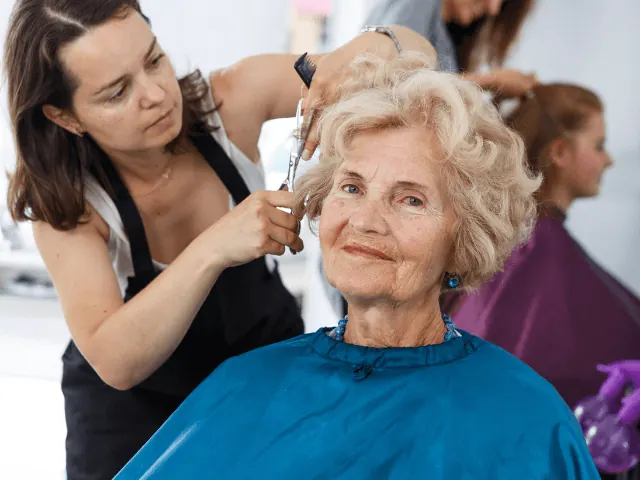
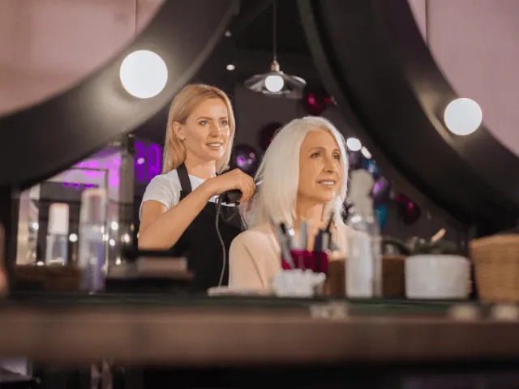

Partnerbijdrage
Wie verzorgt je haar als je op leeftijd bent?
Gepubliceerd op 24 augustus 2023, bijgewerkt op 26 februari 2024
Onderdeel van de gids Kappers in Nijmegen

Als je op leeftijd bent, is het vinden van de juiste persoon om voor je haar te zorgen en te stylen van groot belang. Geen zorgen, we hebben alle informatie en tips voor je verzameld over wie je haar kan verzorgen als de jaren beginnen te tellen.
Kappers gespecialiseerd in seniorenhaar
Ja, ze bestaan echt! Er zijn kapperszaken die gespecialiseerd zijn in het verzorgen en stylen van senioren haar. Deze kappers hebben ervaring met de specifieke behoeften van ouder haar. Ze weten hoe ze dunner wordend haar moeten aanpakken, hoe ze grijs haar kunnen laten stralen en hoe ze fragiel haar kunnen behandelen zonder het te beschadigen. Deze experts kennen de juiste technieken en producten om je haar weer in topvorm te brengen. Bovendien bieden ze een rustige en comfortabele omgeving waar je je op je gemak voelt.
Thuiszorgdiensten
Als je niet in staat bent om naar een kapperszaak te gaan, kun je altijd een beroep doen op thuiszorgdiensten. Thuiszorgverleners kunnen je helpen met het verzorgen en stylen van je haar, allemaal in het comfort van je eigen huis. Van wassen en drogen tot kammen en stylen, ze staan voor je klaar. Bespreek je haarverzorgings behoeften en de producten en tools die je nodig hebt met je thuiszorgverlener. Zo ben je verzekerd van een professionele haarverzorging, zelfs als je niet naar de kapper kunt gaan.

Familieleden of mantelzorgers
Familieleden en mantelzorgers kunnen ook een belangrijke rol spelen bij het verzorgen van je haar. Ze kunnen je helpen met wassen, kammen, stylen en zelfs knippen. Het is essentieel om goede communicatie te hebben en je wensen en behoeften duidelijk te maken. Zorg ervoor dat ze begrijpen hoe je je haar verzorgd wilt hebben en welke producten en tools je daarvoor nodig hebt. Samenwerken met je naasten kan een waardevolle en vertrouwde manier zijn om je haarverzorging te regelen.
Haar verzorgingstips voor zelfstandigheid
Als je nog steeds zelfstandig bent en graag je eigen haar verzorgt, zijn hier een paar handige tips voor jou. Kies haarverzorgingsproducten die speciaal ontwikkeld zijn voor ouder haar, zoals voedende shampoos en conditioners. Investeer in kwalitatieve haarborstels en kammen die zacht zijn voor je haar en hoofdhuid. Neem de tijd om je haar voorzichtig te kammen en te stylen om haarbreuk te voorkomen. Als je advies nodig hebt over haarverzorging, vraag dan je kapper, huisarts of apotheker om aanbevelingen die passen bij je specifieke haar behoeften.

De beste kappers bij je thuis!
En dan hebben we nog een speciale verrassing voor jou: kappers die gewoon bij je thuiskomen! Superhandig, toch?
Thuiskapster tante Pollewop
De naam alleen al brengt een glimlach op je gezicht! Kelly is flexibel en creatief, en ze komt graag bij mensen thuis in Nijmegen, Weurt, Beuningen, Beek, Ooij, Lent en Oosterhout. Ze bewijst dat mooi zijn niet duur hoeft te zijn. Met een Kelly hoef je dus niet langer de deur uit voor een frisse look. Ze komt gewoon bij je thuis, zodat je kunt genieten van een persoonlijke en comfortabele knipervaring.
Kaatje-Knip
Karin begrijpt als geen ander hoe fijn het is wanneer iemand naar je toe komt om je haar te knippen, stylen, föhnen of kleuren. Ze komt sterk aanbevolen door velen en ze wordt door iedereen geweldig gevonden. Kaatje-Knip brengt niet namelijk alleen haar schaar mee, maar ook een flinke dosis gezelligheid en gemak rechtstreeks naar je voordeur.
Van Hot naar Haar
Een geweldige vent die met een arsenaal aan haarproducten je kant op komt. Hij is de ideale keuze voor ouderen die graag professionele haarverzorging ontvangen in het comfort van hun eigen huis. Ook bij je thuis kun je genieten van een heerlijke knipbeurt en ontspannen. Je kunt gemakkelijk online een afspraak inplannen. Met een thuiskapper hoef je je geen zorgen te maken over reistijd of parkeerproblemen. Ze staan klaar om je haar wensen te vervullen zonder gedoe.
DC Haarzorg
Speciaal voor de zorgafhankelijke groep is er Darcy en haar team. Ze willen het zorgpersoneel ontzorgen door te helpen met uiterlijke verzorging. Ze zijn actief op verschillende zorglocaties in Nijmegen. Een thuiskapper voor ouderen begrijpt de speciale behoeften van ouder haar en past zijn/haar technieken en producten dienovereenkomstig aan om dunner wordend haar, grijs haar en andere uitdagingen aan te pakken.
Conclusie
Als je op leeftijd bent, zijn er verschillende opties om je haar te laten verzorgen. Gespecialiseerde kappers voor senioren, thuiszorgdiensten en familieleden of mantelzorgers kunnen allemaal een rol spelen bij het verzorgen en stylen van je haar. Kies de optie die het beste bij je past en zorg ervoor dat je haar altijd de aandacht krijgt die het verdient, zelfs op latere leeftijd.